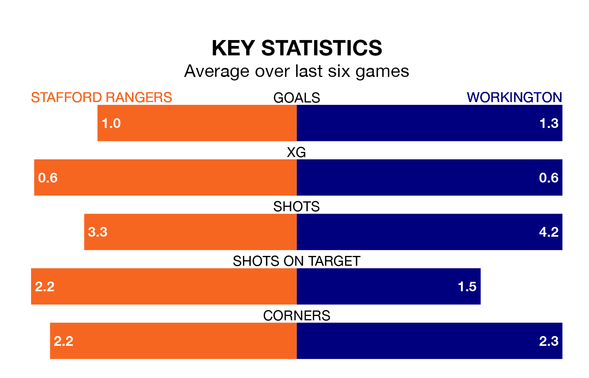

Struggling Stafford Rangers face Workington at Marston Road on Saturday looking to build on a win in their last league outing.
After securing all three points with a 2-0 victory over Bamber Bridge on March 23, Stafford sit 20th in the Northern Premier League.
They travel to play a Workington side 16th in the standings, who lost in their last match, 4-2 against Gainsborough Trinity.
With 33 goals in 34 games so far this season, Stafford are the league's third-lowest scorers with 1.0 goals per game. And they are conceding more than average, letting in 70 goals at a rate of 2.1 per game.
Workington, meanwhile, are above average scorers, with 1.8 goals per game, compared to a league average of 1.6. They have conceded 2.0 goals per game.
In the last 10 years, Stafford and Workington have played each other on seven occasions. Stafford won two of them, Workington three, and they drew twice.
On average, Stafford scored 1.1 goals and Workington 1.3 in those matches.
Their last meeting was on August 26, when Workington won 2-1 at home.
Rangers are in mixed form in the Northern Premier League, with two wins and a draw from their last six games.
And also with two wins and a draw over that period, the visitors' form is identical – they have both taken seven points from 18.
Updated: 12:16 (UTC), 25/03/24